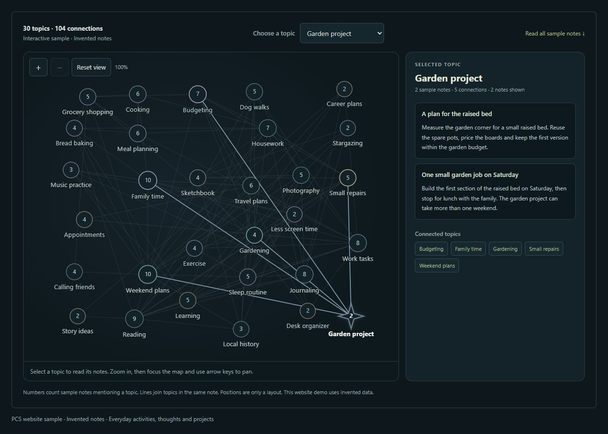
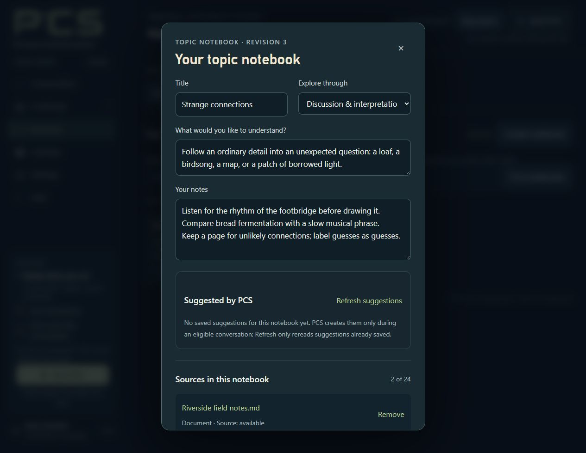

In this guide & related guides
- What PCS saves from conversations
- How recall works
- Read and correct a saved memory
- What each conversation control does
- Documents, notes and AI suggestions
- Back up your vault
Read next
What PCS saves from conversations
With learning enabled, PCS can turn details from a conversation into saved memory records. These records can be updated and linked to source passages. They are stored in your local encrypted vault alongside notebooks and plans.
PCS can miss details, save a mistaken interpretation or retrieve the wrong memory. It does not guarantee that every line of a long conversation will be remembered or included in a later reply. Review important records and correct mistakes.


Explore full image ↗How PCS retrieves saved information
The current conversation and saved memory are separate. The AI uses the conversation context available to it. When recall is enabled, it can also request a search of saved memory records. PCS returns selected matches; the AI can inspect those records and their linked source passages before answering.
Local recall uses word searches. Cloud recall can also use embedding-based similarity when a compatible embedding provider is available. The search index covers current saved memories, rather than every line of every original conversation. Linked source passages help you check a recalled detail. This is a form of retrieval-augmented generation (RAG), with additional controls for inspecting and revising memory.
Read and correct a saved memory
Open Continuity → Library , choose a memory, and inspect its linked sources and revision history. Use the correction controls when it misses your meaning and check the saved outcome afterward. A correction should express what you actually want retained, not merely repeat an interpretation you disagree with.
Learning and recall are controlled in Settings → Sharing & research. Read the explanation beside Learn from our conversations and recall personal memories and any additional sharing permission offered there. Existing saved choices can retain an earlier scope; review the explanation for the permission actually saved. Local storage does not make cloud processing local.
If a correction cannot be confirmed, choose Review latest saved memory. PCS keeps your correction separate while you inspect the saved revision. Choose which content to continue with; reviewing does not save automatically. Ordinary Close or Escape retains the unsaved correction on the current page, while locking or losing the private page clears its displayed text.
Recorded writer versus editable content
Revision writer · recorded by PCS
identifies the writer attached by the host to that revision, including an owner edit or a provider/model where recorded. An
authorship
field inside editable JSON is just saved content; it cannot override the host record. PCS warns about that distinction rather than silently rewriting old memories. Accurate attribution does not establish accurate transcription or interpretation.
A requested save can create a memory, revise an existing one, save a verbatim note or remain pending/refused. For Local replies, inspect the separate PCS save result as well as the saved record: a model’s prose can claim success without a completed write. A second note is not proof that the original was corrected.
The Continuity Map offers a local overview of recurring wording and topic labels with inspectable records, saved-date comparisons and paths. Drag themes into an arrangement that works for you; layout positions are saved in the encrypted vault. In Library, review a Continue this thought draft before bringing it into a conversation.
What each conversation control does
| Control | What to expect |
|---|---|
| Skip speech | Clears current and queued Local playback, cancels unfinished speech synthesis, and waits for cleanup before input returns. Completed text, history and saved actions remain; later replies can speak. |
| Stop thinking | Cancels an in-progress Local answer and its pending lookup. The session and typed draft remain once cancellation is confirmed. It does not undo already-saved actions or delete the original input. |
| Clear chat | Clears displayed messages and completed reference cards. It does not erase saved memories or end the session. |
| Hide memory stream | Hides a panel. Learning continues under your saved settings. |
| Don’t save this conversation | Choose before starting. PCS pauses new saving for that conversation; earlier records and saved settings remain. |
| Stop PCS | Ends conversation and capture, leaving the vault available. |
| Lock | Also closes vault access and clears temporary Materials views. It does not delete original local files. |
Quit PCS shuts down the application after confirmation. Closing only the browser tab can leave the desktop host running and the vault unlocked. Use Lock to close vault access or Quit PCS to finish using the program.
Not saving is not the same as not sharing. “Don’t save this conversation” controls PCS saving. A selected cloud provider still receives the conversation under its own terms; changing the PCS control cannot undo that receipt.
Documents, your notes and AI suggestions
Notebooks can bring together a goal, your own notes, linked original documents and prepared reading notes, with up to 24 linked sources. Separately labeled suggestions may be saved during eligible conversations. A saved source link is not the same as a saved generated suggestion.


Explore full image ↗Materials preparation is bounded. Linking a book does not mean PCS has read its whole contents. Related records in Library suggest possible connections; they are not proof that two ideas mean the same thing. Practice assessments are provisional and can be corrected.
Saved web sources in Materials → Web sources retain supported captured text separately from personal memories and model-prepared notes. A bookmark or progress note is saved separately from the source. Keep generated questions distinct from original text; a partial capture does not establish a complete answer key.
Paste page text saves text you explicitly provide, including in Local mode, without fetching a website. It remains labeled as pasted text; the address does not prove its origin or completeness. Bookmark edits support conflict review, so inspect the saved result before replacing your draft.
If a new notebook’s save is uncertain, use Check saved result. This reads the local result without creating another notebook or contacting a provider. Keep your draft separate while reviewing a different saved version, and follow the offered retry or draft choices.
Back up your vault
Finish or cancel background work, stop the conversation and keep the vault unlocked. Open
Backup & restore
from Settings or Help, choose
Save current backup…
, select a destination and wait for confirmation of the saved
.pcs
file. Keep the passphrase separately.
A complete encrypted backup includes saved continuity and other vault contents, including saved web snapshots and bookmarks. Original Materials files must be copied separately. A readable Markdown or plain-text Export is outside vault encryption and is not a complete restorable backup.
Some saved features raise the minimum PCS version that can read the vault and later backups, even after those choices are cleared. Creating a new notebook, for example, requires 0.9.31 or newer. Keep a pre-feature backup if rollback matters. See the complete update guidance.
Normal Windows Save As, automatic encrypted backups and in-app restore support the 2 GiB physical vault limit. The compatibility browser-download route remains limited to 256 MiB. Wait for a confirmed save; a capacity warning is not a new backup. Follow docs/RESTORE_VAULT.md and verify a restored copy without overwriting your only working vault.
Automatic backups run only while PCS is open, its page connected, and the vault unlocked with conversation and background work stopped. “Don’t save” pauses them. All copies are retained, and a moved or restored vault needs its destination selected again. Earlier backups can still contain records you later forgot. Review storage and sharing boundaries.
Guide for PCS 0.9.33. See the bundled Help and release notes for detailed controls and limitations.